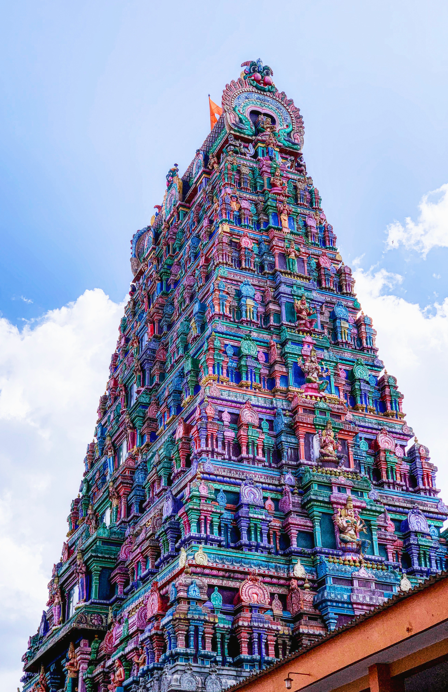
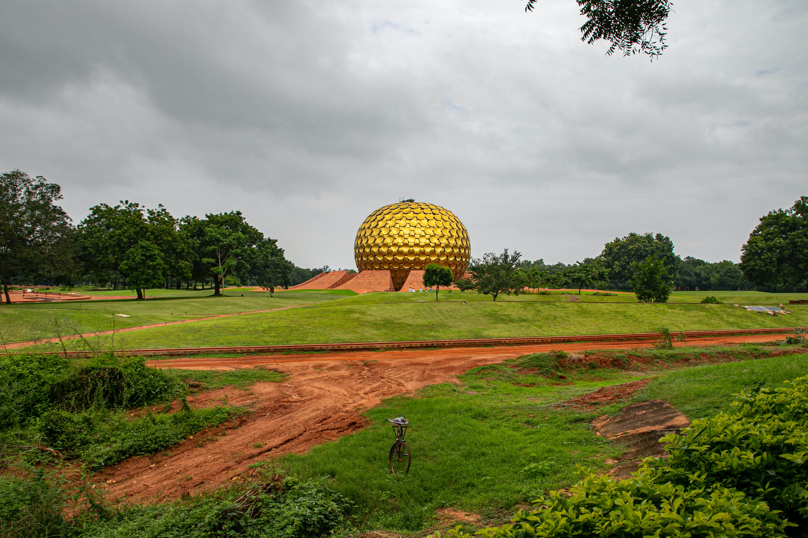
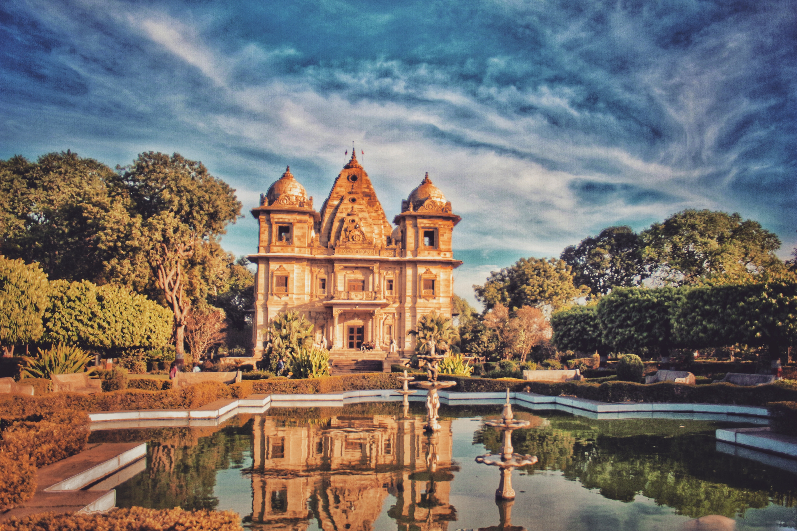
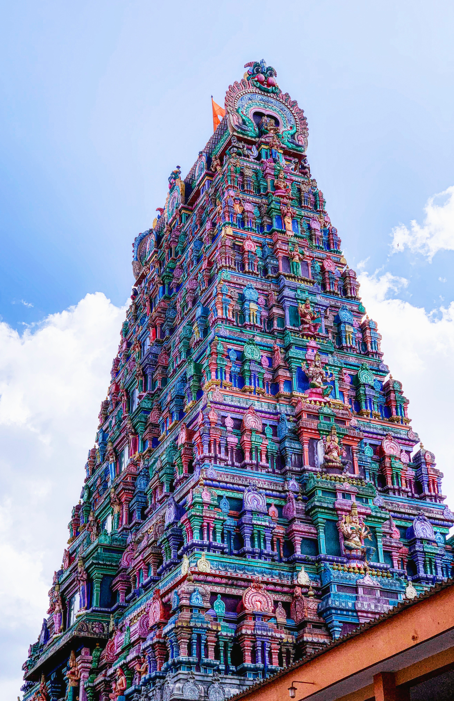
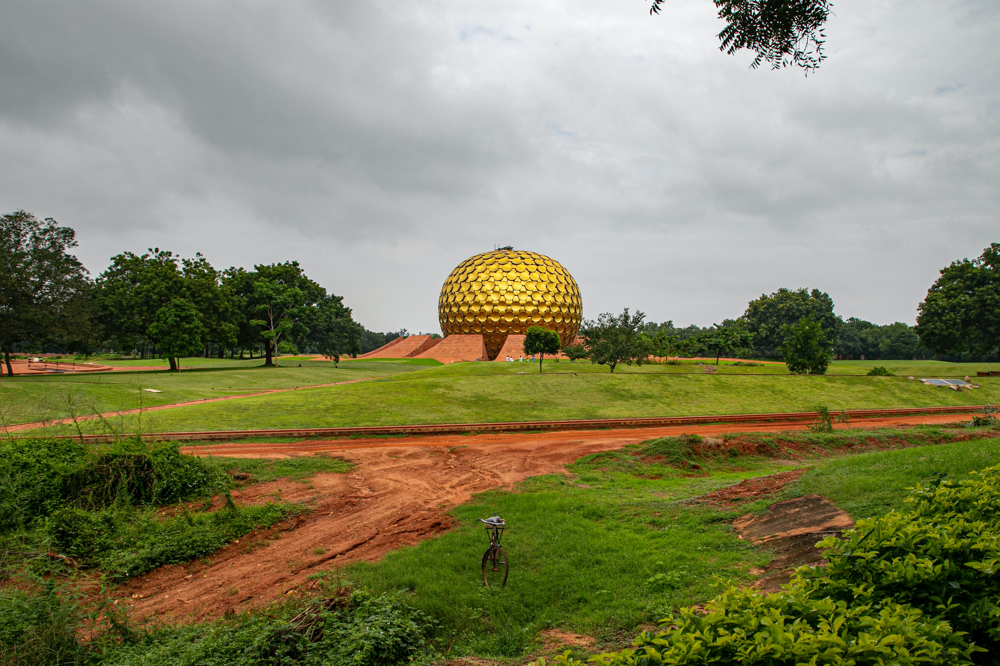
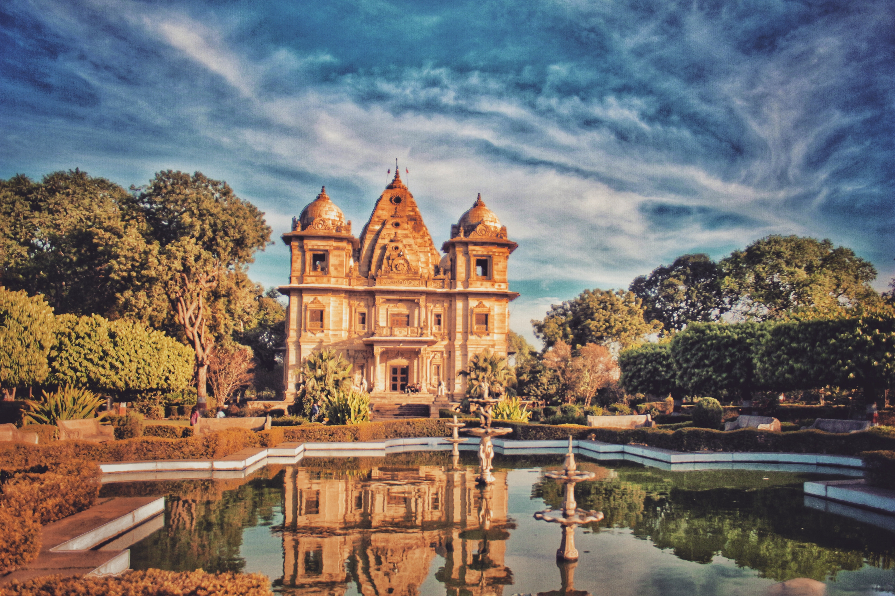
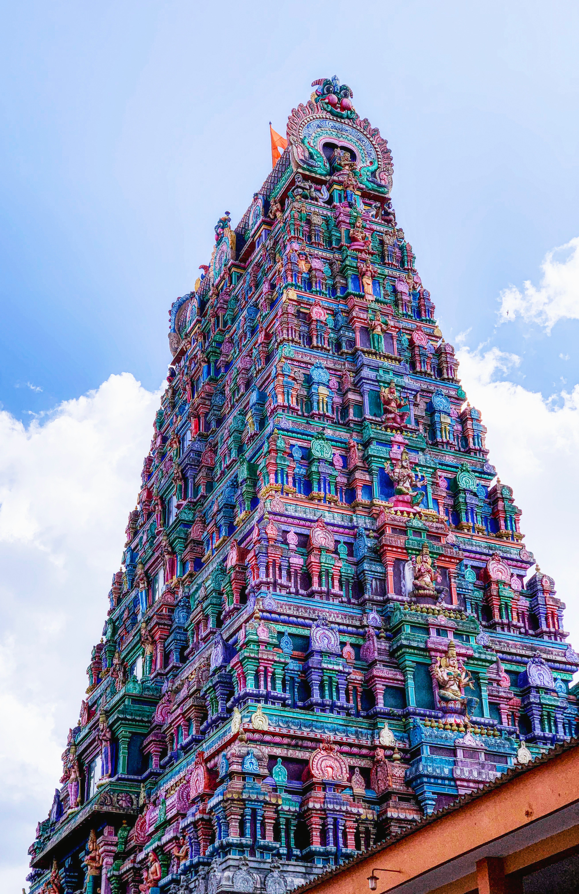
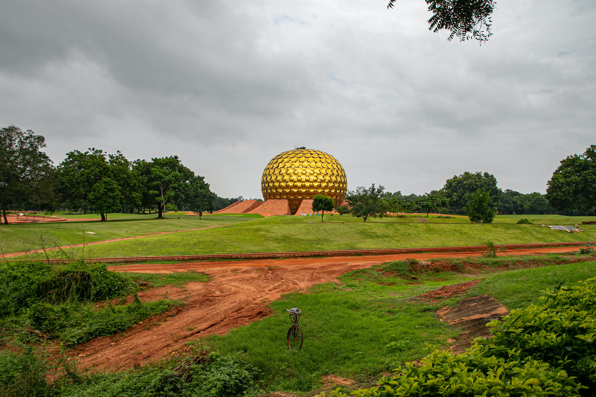
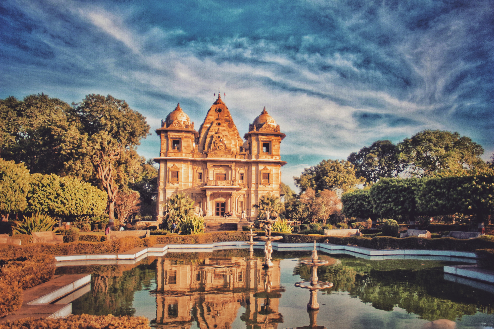

El Taj Mahal, ubicado en la ciudad de Agra a orillas del río Yamuna
Shah Jahan fue un emperador musulmán que gobernó el imperio mogol de la India desde 1628 hasta 1658, en la que es considerada la época dorada de la región.
Al momento de su muerte, se dice que su imperio abarcaba setecientos cincuenta millones de acres, nueva décimas partes del tamaño actual del país.
Sin embargo, Jahan será recordado para siempre gracias al Taj Mahal, un complejo de edificios que mandó construir en 1631, en la ciudad de Agra,
para honrar la memoria de Mumtaz Mahal, su esposa favorita, quien murió durante el parto de su decimocuarta hija. Se estima que unos veinte mil obreros
participaron durante veintitrés años en las labores de construcción de una de las siete maravillas del mundo moderno, en cuyos cimientos descansa una
intensa historia de amor y pasión


